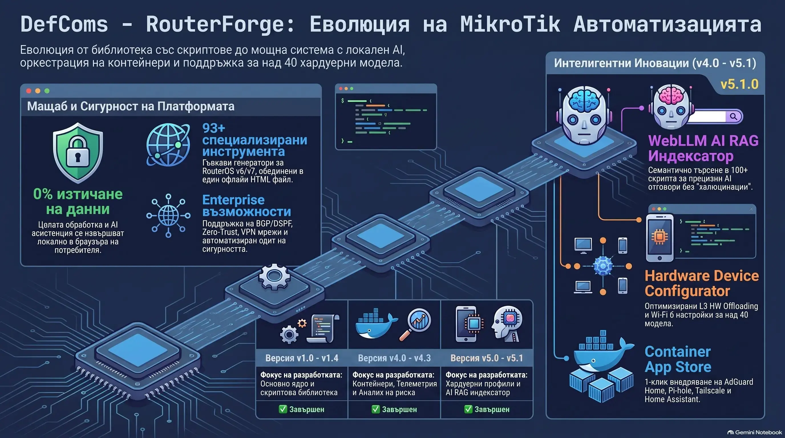

Identity-first security
Zero Trust Architecture
Преминете от доверие по подразбиране към проверим достъп според идентичност, устройство, контекст и минимално необходими права.

По NIST SP 800-207
Достъпът се доказва, не се предполага
Изграждаме Zero Trust модел според реалните идентичности, приложения, устройства и потоци от данни. Започваме постепенно, за да не блокираме бизнеса.
- Identity и MFAСилна автентикация и контрол на привилегиите.
- Device postureДостъп според състоянието и нивото на доверие на устройството.
- МикросегментацияОграничаване на достъпа между приложения и мрежови зони.
- Непрекъснат мониторингОткриване на отклонения и промени в риска.
Хибридна инфраструктура
По-малка зона на доверие
Zero Trust работи за облачни приложения, отдалечени екипи, MikroTik мрежи, SaaS и традиционни сървъри. Свързваме архитектурата с EDR, SOC и cloud security контролите.
Често задавани въпроси
Zero Trust
Какво означава Zero Trust?
Zero Trust означава, че всяка заявка за достъп се проверява според идентичност, устройство, контекст и права, независимо от местоположението.
Подходящ ли е Zero Trust за хибридна работа?
Да. Моделът е особено подходящ за облачни услуги, отдалечени потребители, мобилни устройства и хибридни инфраструктури.
Обхват, срокове и оферта
Как се формират обхватът и офертата за zero trust
Всеки ангажимент се договорира писмено след кратка оценка на средата. Етапите, архитектурните решения и правата за действие се описват в предложението, а сроковете се фиксират според мащаба и поетапността на внедряването.
- Обхват на пилотаКои потребители, устройства и работни натоварвания започват първи.
- Identity инфраструктураКакво вече имате за автентификация и авторизация.
- Интеграция със съществуващи системиМрежа, приложения и облак, които моделът трябва да покрие.
- ПоетапностПлан за разширяване на модела след първата вълна.
Офертата се формира след оценка на тези фактори — заявете консултация или минете през NIS2/DORA самооценката.
Статии по темата